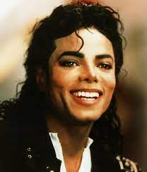

Cantante estadounidense, máxima estrella del pop de los años ochenta. Excelente bailarín y vocalista, dotado de un atractivo indudable para sus incontables seguidores en todo el mundo, Michael Jackson demostró también un talento especial para los negocios relacionados con el mundo de la música y el espectáculo. Su vida privada fue constante fuente de noticias -no siempre positivas- reflejadas con profusión de titulares por las revistas y demás publicaciones de información general.
Hermano de la también estrella del pop Janet Jackson y de la cantante La Toya Jackson, el pequeño Michael se incorporó con sólo ocho años a The Jackson Five, el grupo familiar del que, en uno u otro momento, formaron parte todos los hijos varones de la familia Jackson. Sus excelentes aptitudes para el baile y el canto lo convirtieron pronto en el líder y vocalista de la banda familiar. Su niñez en Gary, sin embargo, fue difícil, por no decir traumática; sufrió los continuos maltratos de su padre, hecho que determinó su inestable y autoexigente personalidad y explica en parte su ambiguo apego a la infancia.
Arropado por Diana Ross y otros artistas de categoría, The Jackson Five experimentó un ascenso fulgurante: tras un primer sencillo en 1967, Berry Gody los contrató para el sello Motown, que hasta 1975 editó los sucesivos y exitosos singles que, junto con las apariciones televisivas y los conciertos, lanzaron el grupo al estrellato. Sin llegar a desvincularse de sus hermanos, con quienes seguiría compartiendo grabaciones y escenarios, Michael Jackson inició una trayectoria individual en 1971, año en que editó Got to Be There (1971), al que siguió Ben (1972). Ambos álbumes entraron con fuerza en las listas; con la canción que dio título al segundo álbum, Ben, alcanzó su primer número uno en Estados Unidos. Con la discográfica Motown grabó todavía dos álbumes más (Music and Me, 1973, y Forever, Michael, 1975), de menor
éxito.
En 1975, tras romper con Motown y fichar por Epic Records, The Jackson Five pasaron a llamarse The Jacksons. Aunque hasta 1985, y tanto en sus giras y conciertos como en las grabaciones en estudio, el grupo pudo contar con la presencia y aportaciones de su líder, Michael Jackson fue progresivamente concentrándose en su carrera en solitario, especialmente después de la fama que le reportó su intervención en la película musical de Sidney Lumet El Mago (1978), un remake de El Mago de Oz en el que, interpretando el papel de Espantapájaros, cantó a dúo con Diana Ross.Aunque el filme no fue un gran éxito de taquilla, su director musical, Quincy Jones, quedó fascinado por el talento de aquel joven de veinte años y se convirtió en el principal artífice de la meteórica carrera que impulsaría a Michael Jackson hasta cotas de popularidad nunca vistas. La importancia del respaldo de Quincy Jones se puso en evidencia con los resultados del álbum Off the Wall (1979), que daría al nuevo ídolo del pop la nada despreciable cantidad de cinco singles de éxito consecutivos, con temas como Rock with You o Don't Stop 'Til You Get Enough. El álbum en sí no llegó a ser número uno, pero superó los ocho millones de copias vendidas antes de que acabase ese año. A partir de entonces empezaron a conocerse algunas de las manías y extravagancias de las que Michael Jackson haría gala a lo largo de toda su carrera, como sus personales ideas religiosas o la desmedida atención que prestaba a su salud y a su apariencia física; fueron, sin embargo, los años en que mejor concentró su talento y energías en la creación artística. El éxito de Off the Wall propició una nueva colaboración de Jackson con Quincy Jones, cuyo resultado, tras un largo e intenso trabajo, fue Thriller, que no salió al mercado hasta 1982.
Thriller registró un éxito abrumador, pasando en poco tiempo a ser el disco de un solo artista más vendido de la historia de la música. Siete de sus nueve canciones se auparon como sencillos en las listas tanto americanas como británicas, y dos de sus temas, Billie Jean y Beat It, acompañados de atractivos vídeos, llegaron a ocupar sucesivamente el primer lugar del ranking de ventas en Estados Unidos. En Inglaterra lograría aún más fama con dos temas cantados con el ex miembro de The Beatles Paul McCartney, The Girl Is Mine (incluido en Thriller) y Say Say Say, que formó parte del álbum de McCartney Pipes of Peace (1983).
Michael Jackson demostró su instinto comercial al idear la creación de un vídeo para potenciar la canción que daba título al álbum y que todavía no había aparecido en forma de single. Para su dirección contrató a John Landis, y lo produjo, en gran parte, pagándolo de su bolsillo, ya que la discográfica no creía que la inversión fuese necesaria; los responsables de la compañía opinaban, muy equivocadamente, que el disco estaba ya en su límite de ventas. La aparición del vídeo de Thriller, con sus novedosos efectos especiales y su elaborada coreografía, sacudió las estructuras habituales del mercado de la música. El álbum se disparó hasta los cuarenta millones de copias, doblando casi las ventas anteriores al vídeo. El propio vídeo en formato doméstico alcanzó también ventas millonarias, dejando de ser un mero instrumento de promoción del álbum para convertirse en un negocio en sí mismo.

Tras recibir ocho premios Grammy por Thriller, todavía acompañó Michael Jackson a sus hermanos en los conciertos promocionales del penúltimo álbum de la banda, Victory (1984), así como en la gira final de The Jacksons en 1985, patrocinada por una importante compañía de refrescos. Junto a una impresionante nómina de consagrados artistas estadounidenses (Bruce Springsteen, Stevie Wonder, Ray Charles, Bob Dylan, Tina Turner, entre otros), ese mismo año participó en la grabación del single We Are the World (tema compuesto por el propio Jackson y Lionel Richie), cuyos beneficios se destinaron a combatir el hambre y las enfermedades en África. No fue éste el primero ni el último de los proyectos altruistas en que colaboró el cantante; pero sus conocidas excentricidades, a menudo deformadas, y sobre todo las sospechas de pedofilia, por las que nunca llegó a ser condenado, pesarían luego como una losa sobre su imagen, haciendo olvidar que ninguna estrella musical entregó a organizaciones humanitarias tantas donaciones y recaudaciones de conciertos y discos como Michael Jackson.
Centrado ya exclusivamente en su carrera en solitario, el artista siguió gozando de la admiración mundial y de ventas estratosféricas. Dos años después lanzó un nuevo álbum, Bad (1987), de casi idéntico éxito comercial que su anterior disco: cinco de los sencillos extraídos del álbum alcanzaron la primera posición en las listas. Al año siguiente publicó su autobiografía, Moonwalk (1988), y protagonizó Moonwalker (1988), filme articulado sobre una sucesión de números musicales con estética de videoclip. De esta época data la adquisición de la finca californiana en que mandó construir su fantástica residencia, el célebre rancho bautizado como Neverland («Nunca Jamás», como la isla de Peter Pan en que los niños no crecían), una gran mansión rodeada por un parque de atracciones, un zoológico y un cine.
En los años noventa apareció Dangerous (1991), promocionado, al igual que Bad, con una gran gira internacional que congregó sus millones de seguidores en todo el mundo. También el primer sencillo extraído del álbum, Black or White, ocupó el primer lugar en las listas; pero dos años después estalló un escándalo por las supuestas inclinaciones pederastas del cantante, que evitó el juicio mediante un acuerdo extrajudicial. Muchos años después, ya fallecido Michael Jackson, la presunta víctima de los abusos confesaría que, bajo la presión de su padre, había formulado acusaciones falsas para obtener una indemnización.
Todo ello llevó a la suspensión de algunos conciertos y a un retiro que sólo abandonó para divulgar su relación con la también cantante Lisa Marie Presley, hija de Elvis Presley. Se habían casado en secreto en mayo de 1994; el efímero matrimonio terminó a principios de 1996. En noviembre de ese mismo año, Michael Jackson volvió a contraer matrimonio con Debbie Rowe, una enfermera a la que había conocido quince años atrás, con la que tendría un niño y una niña; la unión concluyó también tempranamente en 1999, reteniendo el padre la custodia de los hijos.
Antes, a mediados de 1995, Michael Jackson editó HIStory: Past, Present and Future, Book I. Este disco doble fue una recopilación de quince de sus grandes éxitos (en el primer disco, titulado HIStory Begins) y al mismo tiempo su quinto álbum de estudio, pues el segundo disco, titulado HIStory Continues, contenía otras quince canciones nuevas, entre ellas Scream, interpretado a dúo con su hermana Janet Jackson, y You Are Not Alone, su enésimo número uno en las listas. En agosto, el ídolo participó en una sesión de Internet, respondiendo, por espacio de una hora, a las preguntas de todos aquellos que tuvieron la posibilidad de acceder al servicio. Apoyado por una campaña publicitaria sin precedentes y otra gira mundial en 1996-1997, HIStory acabó siendo el disco doble más vendido de la historia.
Después de seis años de silencio (si se exceptúa el álbum de remezclas Blood on the Dance Floor: HIStory in the Mix, 1997), el sello discográfico Sony Music anunció el lanzamiento mundial de Invincible (2001), el nuevo trabajo del rey del pop. Pese a que el enfrentamiento y posterior ruptura del cantante con Sony Music limitó su promoción, las copias vendidas siguieron contándose en millones.
Pero dos años después, Michael Jackson volvió a protagonizar un escandaloso episodio mediático: la policía de Santa Bárbara emitió una orden de busca y captura contra él por un presunto delito de abusos sexuales a menores; Michael Jackson se entregó a las autoridades el 20 de noviembre de 2003, y, pese a la gravedad de la denuncia, quedó en libertad provisional después de pagar una fianza de tres millones de dólares. Su calvario no terminó ahí, pues en la primavera de 2004 volvió a ser acusado formalmente de abuso de menores, por lo que tuvo que volver de nuevo a los tribunales. En junio de 2005, tras un juicio que se prolongó por espacio de cinco meses, la sentencia absolvió al cantante de todos los cargos.
Una imagen maltrecha, penurias económicas y problemas de salud marcaron sus últimos años. Las dificultades con la justicia provocaron la clausura de su residencia, el famoso rancho Neverland; para eludir la presión mediática, se trasladó a Bahréin, invitado por el príncipe de este pequeño país del Golfo Pérsico. Jackson trató de solventar sus problemas económicos lanzando recopilatorios como King of Pop (2008) y Thriller 25 (2008), una reedición de Thriller con algunos temas nuevos, mientras preparaba su regreso a los escenarios en un último intento de relanzar su carrera. Finalmente, en marzo de 2009 anunció una gira de conciertos denominada This Is It, que había de iniciarse en Londres en julio del mismo año. Su inesperada muerte de un ataque el corazón, pocas semanas antes del comienzo de la gira, causó gran conmoción en todo el mundo